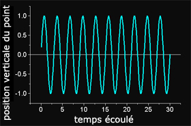
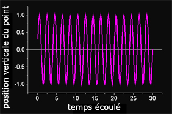
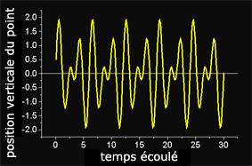
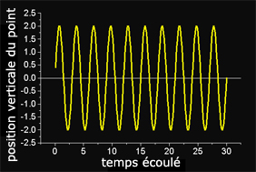
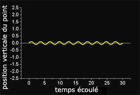
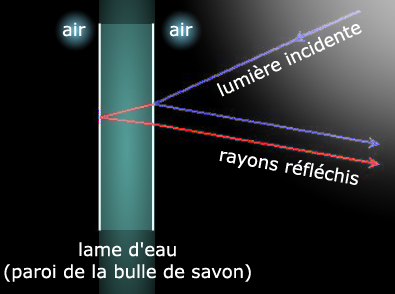

|
|
Navig.
page/section


_____
|
|
Pages soeurs
I, A propos des liants
II, Bulles, siccativ., struct. élec.
III, Caséine, phosphore, dissociation
IV, Les orbitales
V, L'aérogel
VI, Polarisation de la lumière
VII, Sfumato et diffusion Rayleigh
VIII, Les interférentielles
IX, Dextrine, farine et chiralité
X, L'ocre bleue
XI, Les métamatériaux
XII, Le jaunissement
XIII, Laser etc.
XIV, L'holographie
XV, L'holographie numérique
XVI, Extérieur, intérieur, chaux
XVII, L'électrolyse et les ions
XVIII, L'électricité, un peu plus loin
XIX, Oxydation, métaux
XX, Les échelles
XXI, Nature et évolution des résines
XXII, Le mouillage pigmentaire
XXIII, La molette
XXIV, Blanche neige
XXV, Lumière et matière
XXVI, Magnétisme
XXVII, Ambre et vieilles branches
XXVIII, L'origami miroir
XXIX, Le feu
XXX, Peau du métal
XXXI, La ville en un souffle
XXXII, Oxyder des matériaux
XXXIII, Ocre bleue, une solution
_____
|
Copyright © www.dotapea.com
Tous droits réservés.
Précisions cliquer ici
|
|
| |
|
|
Les
dialogues sur la physique-chimie
appliquée
aux arts
Chapitre VIII
Les interférentielles
|
 |
dial dial
dial
Ce chapitre des
Dialogues de Dotapea
est
une discussion entre Jean-Louis, physico-chimiste au CNRS, et un
candide, Emmanuel.
Les personnages sont réels, la
discussion aussi. Elle peut reprendre à tout moment et ce texte peut s'allonger.
|
Emmanuel :
Des fabricants de pigments proposent des produits "interférentiels". De
fait, on constate des phénomènes chromatiques étranges, assez difficiles à
maîtriser d'ailleurs. Que peux-tu dire sur cette capacité propre aux ondes
de pouvoir être interférentielles ? A quoi correspondent physiquement ces
phénomènes bien sensibles, voire spectaculaires ?
Jean-Louis : Une onde qui se propage est une perturbation périodique du
milieu où elle se propage. Si par exemple on trace la position d'un point
situé sur une surface
d'eau lors du passage de vagues (la perturbation) on a une courbe de ce genre
:

(En toute rigueur le mouvement des vagues est un peu plus compliqué, mais on
peut faire une approximation.)
On peut imaginer que deux perturbations (voire un nombre arbitraire) se
propagent simultanément dans le même milieu.

|
|
La danse des ondes
|
|
Un point du milieu subira alors plusieurs influences et son mouvement, donc sa position, sera fonction des caractéristiques des deux perturbations:

Dans le cas où les
deux perturbations (les deux ondes) ont la même fréquence et la même
amplitude, il peut arriver que leur action sur le point d'observation soit
cumulative:

On note que
l'amplitude du mouvement est double de ce qu'elle est quand il n'y a qu'une
onde (voir la position verticale du point).
Et il peut arriver que l'action des deux perturbations soit au contraire
minimale, l'une des deux contrariant exactement le mouvement de l'autre :

On a volontairement
conservé une amplitude non-nulle pour l'illustration, mais on peut tout à
fait parvenir à un déplacement, une perturbation très exactement nulle.
L'interaction de deux ondes (ou davantage) de même
fréquence et de même amplitude s'appelle "interférence". Les
interférences peuvent donner lieu à des perturbations résultantes
d'amplitude nulle, on parle d'interférences destructives, et si la
perturbation résultante est au contraire maximisée on parle d'interférences
constructives.
On observe des interférences avec toutes les ondes périodiques : mécaniques
(vibrations), optiques (lumière), sonores. Dans les casques anti-bruits dits
"actifs", un micro capte le bruit au niveau du pavillon de l'oreille, un
montage électronique recrée le signal exactement opposé qui est envoyé au
haut-parleur. Le signal de bruit et le signal recalculé s'annulent
exactement au niveau de l'oreille, on n'entend plus rien !
La lumière est aussi un phénomène ondulatoire qui donne lieu aux phénomènes
d'interférences. Les irisations d'une couche d'huile dans une flaque d'eau,
des bulles de savon, des élytres de certains scarabées, des ailes de
certains papillons (les bleus du Brésil, je connais pas leur nom), la nacre
des coquillages, la couleur des opales : des phénomènes interférentiels !
Dans les cas que je viens de mentionner, le point
commun de tous ces systèmes est d'être stratifiés. Ils possèdent au
minimum une couche de matériau. C'est la réflexion de la lumière sur les
différents interfaces qui multiplie les ondes, ces ondes peuvent ensuite
interférer, mais il faut au minimum deux ondes pour qu'il y ait des
interférences.
|
|
Une
véritable question de rythme |
|
Prenons l'exemple de la paroi d'une bulle de savon. C'est une lame d'eau
stabilisée par des molécules de tensioactif
(savon). Un rayon de lumière incident (bleu, voir schéma
ci-dessous) va se partager à chaque
interface en un rayon réfléchi (bleu) et un rayon transmis (rouge). Le rayon
transmis (on dit aussi réfracté) se réfléchit à son tour à chaque interface,
il va donc générer le rayon rouge qui ressort parallèlement au rayon bleu,
mais décalé, et surtout retardé : il a "perdu" du temps dans la bulle par
rapport au rayon bleu qui s'est réfléchi "tout de suite".
Ces deux rayons,
ces deux perturbations, issues d'un même rayon, sont maintenant
temporellement décalées. On dit qu'elles sont déphasées. Le déphasage est
fonction des propriétés optiques du milieu traversé, son indice de
réfraction et son épaisseur. Selon la valeur du déphasage, et donc de
l'épaisseur de la lame d'eau, les interférences des deux rayons seront
constructives ou destructives (voir ci-dessus). Complication : l'indice de réfraction d'un
matériau n'est pas le même pour toutes les radiations, l'indice pour le bleu
n'est pas égal à l'indice pour le rouge. Donc le déphasage varie en fonction
de la longueur d'onde de la lumière incidente.

En lumière blanche,
on peut donc avoir des interférences destructives pour une couleur et
constructives pour une autre, les interférences sont donc colorées : les
irisations de la bulle de savon. En outre, le déphasage varie en fonction de
l'angle d'incidence des rayons, les couleurs varient donc en fonction de
l'angle d'incidence ou d'observation. C'est dû au fait que l'épaisseur
apparente de la lame n'est pas la même si on la regarde de face ou de biais.
|
|
Réfraction et bulle de savon Quelques
précisions dans un courrier des Lecteurs :
cliquer ici. |
|
Cas des pigments
dits "interférentiels" : si le milieu est stratifié,
formé d'une multitude de plans, d'interfaces, le phénomène d'interférences
est accentué en ce que certaines couleurs (longueurs d'ondes) seront très
efficacement renforcées ou éliminées. Le matériau a alors une couleur plus
homogène, par exemple les ailes de ces fameux papillons bleus ou les élytres de
ces scarabées verts. Le fait que la coloration résulte d'un phénomène
physique d'interférences et non pas d'absorption [ndlr : absorption
spectrale classique, voir
Un pigment n'est pas une couleur in Les pigments, les couleurs] par un pigment donne à ces
couleurs leur aspect particulier. Dans le cas de ces milieux stratifiés, ce
qui détermine la couleur de la lumière réfléchie est essentiellement la
périodicité des plans, c'est-à-dire leur épaisseur. Si on augmente
l'épaisseur des plans, les couleurs vont vers le rouge, elles vont vers le
bleu si on la diminue. Un procédé historique de photographie en couleur a
utilisé ce phénomène : le procédé Lipman. Il fonctionnait par interférences,
sans aucun pigment. Très élégant!
Emmanuel : Tu écris : "Si on augmente
l'épaisseur des plans, les couleurs vont vers le rouge, elles vont vers le
bleu si on la diminue". Cela fait un peu penser à la
diffusion Rayleigh.
Est-ce qu'il y a un rapport ?
Jean-Louis : Non, c'est sans rapport.
Emmanuel : Les fabricants de
pigments interférentiels insistent sur deux points : le changement
chromatique en fonction de l'angle d'observation (c'est vrai, ça marche, tu
passes du vert au violet par exemple) et l'importance du fond noir ou clair.
Qu'en penses-tu ?
Jean-Louis : Le changement de
couleur en fonction de l'angle est lié au fait que si tu
regarde une lame de matériau sous une incidence oblique, son épaisseur
apparente augmente. Comme les interférences sont fonction de l'épaisseur
du matériau diffractant, la couleur change avec l'angle.
Emmanuel : D'accord.
Plastiquement, c'est intéressant.
Jean-Louis : Je vois deux choses
: un fond coloré va modifier les couleurs, par exemple si
tu mets un pigment interférentiel vert sur un fond rouge, "ça ne marchera
pas", tu verras du noir.
Et les interférences (donc ici la couleur), sont idéalement observables si
on maximise le contraste. J'aurais tendance à dire que les fonds noirs
sont meilleurs, on évite la dilution de la couleur par la lumière
simplement diffusée par le fond clair.
|
|
Ce
qui donne aux pigments interférentiels un aspect si particulier
[Lire aussi un article consacré directement aux
pigments interférentiels - cliquer
ici] |
|
Emmanuel : J'ai reçu une
question qui m'a semblé très intéressante, pragmatique. C'est
au sujet d'une vieille déco murale dans une maison ancienne en Bourgogne qui
aurait un aspect... "nacré" (interférentiel ?). A priori, le pigment est une
argile prise dans le jardin, mais la même argile utilisée avec un lait de
chaux classique ne donne pas cet aspect. On a donc employé une autre
substance a priori.
Ça soulève une question : avant de faire des assemblages de mica micro ou
nanométriques sur les pigments, comment a-t-on pu s'y prendre dans le passé
pour créer des effets interférentiels avec des matériaux simples ?
Jean-Louis : Certaines argiles
forment des phases lamellaires de type cristal liquide.
Ça peut donner des interférences. Par exemple, dans certaines flaques
d'eau de forêt on voit souvent des irisations qui ressemblent à celles que
produit l'essence et les hydrocarbures. On prend cela pour de la pollution mais
ce n'est que de l'argile!! Pour la peinture, donc, pourquoi pas, mais les
phases lamellaires dont je parle exigent une bonne quantité d'eau pour
être stables. Donc l'explication est plus compliquée que le simple mélange d'argile
et de pigments.
Lire aussi un
passage
concernant les interférences
renvoyées par l'opale in Chapitre XI, les métamatériaux.
|
|
Les
anciennes interférences |
|
La suite : chapitre IX |
Retour
début de page
|
|

 Communication
Communication


|
|